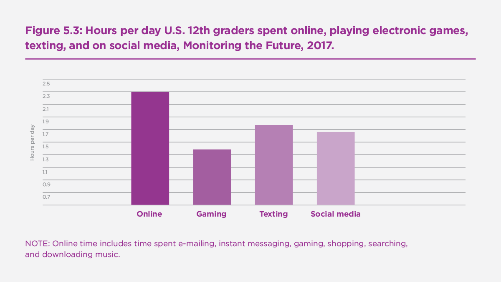

The Sad State of Happiness in the United States and the Role of Digital Media
The years since 2010 have not been good ones for happiness and well-being among Americans. Even as the United States economy improved after the end of the Great Recession in 2009, happiness among adults did not rebound to the higher levels of the 1990s, continuing a slow decline ongoing since at least 2000 in the General Social Survey (Twenge et al., 2016; also see Figure 5.1). Happiness was measured with the question, “Taken all together, how would you say things are these days—would you say that you are very happy, pretty happy, or not too happy?” with the response choices coded 1, 2, or 3.
Figure 5.1: General happiness, U.S. adults, General Social Survey, 1973-2016

Happiness and life satisfaction among United States adolescents, which increased between 1991 and 2011, suddenly declined after 2012 (Twenge et al., 2018a; see Figure 5.2). Thus, by 2016-17, both adults and adolescents were reporting significantly less happiness than they had in the 2000s.
Figure 5.2: General happiness, U.S. 8th, 10th, and 12th graders (ages 13 to 18), Monitoring the Future, 1991-2017
In addition, numerous indicators of low psychological well-being such as depression, suicidal ideation, and self-harm increased sharply among adolescents since 2010, particularly among girls and young women (Mercado et al., 2017; Mojtabai et al., 2016; Plemmons et al., 2018; Twenge et al., 2018b, 2019a). Depression and self-harm also increased over this time period among children and adolescents in the UK (Morgan et al., 2017; NHS, 2018; Patalay & Gage, 2019). Thus, those in iGen (born after 1995) are markedly lower in psychological well-being than Millennials (born 1980-1994) were at the same age (Twenge, 2017).
This decline in happiness and mental health seems paradoxical. By most accounts, Americans should be happier now than ever. The violent crime rate is low, as is the unemployment rate. Income per capita has steadily grown over the last few decades. This is the Easterlin paradox: As the standard of living improves, so should happiness – but it has not.
Several credible explanations have been posited to explain the decline in happiness among adult Americans, including declines in social capital and social support (Sachs, 2017) and increases in obesity and substance abuse (Sachs, 2018). In this article, I suggest another, complementary explanation: that Americans are less happy due to fundamental shifts in how they spend their leisure time. I focus primarily on adolescents, since more thorough analyses on trends in time use have been performed for this age group. However, future analyses may find that similar trends also appear among adults.
The data on time use among United States adolescents comes primarily from the Monitoring the Future survey of 13- to 18-year-olds (conducted since 1976 for 12th graders and since 1991 for 8th and 10th graders), and the American Freshman Survey of entering university students (conducted since 1966, with time use data since 1987). Both collect large, nationally representative samples every year (for more details, see iGen, Twenge, 2017).
The rise of digital media and the fall of everything else
Over the last decade, the amount of time adolescents spend on screen activities (especially digital media such as gaming, social media, texting, and time online) has steadily increased, accelerating after 2012 after the majority of Americans owned smartphones (Twenge et al., 2019b). By 2017, the average 12th grader (17-18 years old) spent more than 6 hours a day of leisure time on just three digital media activities (internet, social media, and texting; see Figure 5.3). By 2018, 95% of United States adolescents had access to a smartphone, and 45% said they were online “almost constantly” (Anderson & Jiang, 2018).
Figure 5.3: Hours per day U.S. 12th graders spent online, playing electronic games, texting, and on social media, Monitoring the Future, 2017

NOTE: Online time includes time spent e-mailing, instant messaging, gaming, shopping, searching, and downloading music.
During the same time period that digital media use increased, adolescents began to spend less time interacting with each other in person, including getting together with friends, socializing, and going to parties. In 2016, iGen college-bound high school seniors spent an hour less a day on face-to-face interaction than GenX adolescents did in the late 1980s (Twenge et al., 2019). Thus, the way adolescents socialize has fundamentally shifted, moving toward online activities and away from face-to-face social interaction.
Other activities that typically do not involve screens have also declined: Adolescents spent less time attending religious services (Twenge et al., 2015), less time reading books and magazines (Twenge et al., 2019b), and (perhaps most crucially) less time sleeping (Twenge et al., 2017). These declines are not due to time spent on homework, which has declined or stayed the same, or time spent on extracurricular activities, which has stayed about the same (Twenge & Park, 2019). The only activity adolescents have spent significantly more time on during the last decade is digital media. As Figure 5.4 demonstrates, the amount of time adolescents spend online increased at the same time that sleep and in-person social interaction declined, in tandem with a decline in general happiness.
Figure 5.4: Time spent on the internet, sleeping more than 7 hours a night most nights, frequency of in-person social interaction across 7 activities, and general happiness, standardized (Z) scores, 8th and 10th graders, Monitoring the Future, 2006-2017
Several studies have found that adolescents and young adults who spend more time on digital media are lower in well-being (e.g., Booker et al., 2015; Lin et al., 2016; Twenge & Campbell, 2018). For example, girls spending 5 or more hours a day on social media are three times more likely to be depressed than non-users (Kelly et al., 2019), and heavy internet users (vs. light users) are twice as likely to be unhappy (Twenge et al., 2018). Sleeping, face-to-face social interaction, and attending religious services – less frequent activities among iGen teens compared to previous generations – are instead linked to more happiness. Overall, activities related to smartphones and digital media are linked to less happiness, and those not involving technology are linked to more happiness. (See Figure 5.5; note that when iGen adolescents listen to music, they usually do so using their phones with earbuds).
Figure 5.5: Correlation between activities and general happiness, 8th and 10th graders, Monitoring the Future, 2013-2016 (controlled for race, gender, SES, and grade level)

Green bars = non-phone activities; red bars = phone activities
In short, adolescents who spend more time on electronic devices are less happy, and adolescents who spend more time on most other activities are happier. This creates the possibility that iGen adolescents are less happy because their increased time on digital media has displaced time that previous generations spent on non-screen activities linked to happiness. In other words, digital media may have an indirect effect on happiness as it displaces time that could be otherwise spent on more beneficial activities.
Digital media activities may also have a direct impact on well-being. This may occur via upward social comparison, in which people feel that their lives are inferior compared to the glamorous “highlight reels” of others’ social media pages; these feelings are linked to depression (Steers et al., 2014). Cyberbullying, another direct effect of digital media, is also a significant risk factor for depression (Daine et al., 2013; John et al., 2018). When used during face-to-face social interaction, smartphone use appears to interfere with the enjoyment usually derived from such activities; for example, friends randomly assigned to have their phones available while having dinner at a restaurant enjoyed the activity less than those who did not have their phones available (Dwyer et al., 2018), and strangers in a waiting room who had their phones available were significantly less likely to talk to or smile at other people (Kushlev et al., 2019). Thus, higher use of digital media may be linked to lower well-being via direct means or by displacing time that might have been spent on activities more beneficial for well-being.
Correlation and causation
The analyses presented thus far are correlational, so they cannot prove that digital media time causes unhappiness. Third variables may be operating, though most studies control for factors such as gender, race, age, and socioeconomic status. Reverse causation is also possible: Perhaps unhappy people spend more time on digital media rather than digital media causing unhappiness. However, several longitudinal studies following the same individuals over time have found that digital media use predicts lower well-being later (e.g., Allen & Vella, 2018; Booker et al., 2018; Kim, 2017; Kross et al., 2013; Schmiedeberg & Schroder, 2017; Shakya & Christakis, 2017). In addition, two random-assignment experiments found that people who limit or cease social media use improve their well-being. Tromholt (2017) randomly assigned more than 1,000 adults to either continue their normal use of Facebook or give it up for a week; those who gave it up reported more happiness and less depression at the end of the week. Similarly, Hunt et al. (2018) asked college students to limit their social media use to 10 minutes a day per platform and no more than 30 minutes a day total, compared to a control group that continued their normal use. Those who limited their use were less lonely and less depressed over the course of several weeks.
Both the longitudinal and experimental studies suggest that at least some of the causation runs from digital media use to well-being. In addition, the increases in teen depression after smartphones became common after 2011 cannot be explained by low well-being causing digital media use (if so, one would be forced to argue that a rise in teen depression caused greater ownership of smartphones, an argument that defies logic). Thus, although reverse causation may explain some of the association between digital media use and low well-being, it seems clear it does not explain all of it.
In addition, the indirect effects of digital media in displacing time spent on face-to-face social interaction and sleep are not as subject to reverse causation arguments. Deprivation of social interaction (Baumeister & Leary, 1995; Hartgerink et al., 2015; Lieberman, 2014) and lack of sleep (Zhai et al., 2015) are clear risk factors for unhappiness and low well-being. Even if digital media had little direct effect on well-being, it may indirectly lead to low well-being if it displaces time once spent on face-to-face social interaction or sleep.
Conclusion
Thus, the large amount of time adolescents spend interacting with electronic devices may have direct links to unhappiness and/or may have displaced time once spent on more beneficial activities, leading to declines in happiness. It is not as certain if adults have also begun to spend less time interacting face-to-face and less time sleeping. However, given that adults in recent years spent just as much time with digital media as adolescents do (Common Sense Media, 2016), it seems likely that their time use has shifted as well. Future research should explore this possibility.
Thus, the fundamental shift in how adolescents spend their leisure time may explain the marked decline in adolescent well-being after 2011. It may also explain some of the decline in happiness among adults since 2000, though this conclusion is less certain. Going forward, individuals and organizations focused on improving happiness may turn their attention to how people spend their leisure time.
References
Allen, M. S., & Vella, S. A. (2015). Screen-based sedentary behaviour and psychosocial well-being in childhood: Cross-sectional and longitudinal associations. Mental Health and Physical Activity, 9, 41-47.
Anderson, M., & Jiang, J. (2018). Teens, social media, & technology 2018. Pew Research Center. http://www.pewinternet.org/2018/05/31/teens-social-media-technology-2018/
Baumeister, R. F., & Leary, M. R. (1995). The need to belong: Desire for interpersonal attachments as a fundamental human motivation. Psychological Bulletin, 117, 497–529.
Baumeister, R. F., & Leary, M. R. (1995). The need to belong: Desire for interpersonal attachments as a fundamental human motivation. Psychological Bulletin, 117, 497–529.
Booker, C. L., Skew, A. J., Kelly, Y. J., & Sacker, A. (2015). Media use, sports participation, and well-being in adolescents: Cross-sectional findings from the UK household longitudinal study. American Journal of Public Health, 105, 173-179.
Booker, C. L., Kelly, Y. J., & Sacker, A. (2018). Gender differences in the associations between age trends of social media interaction and well-being among 10-15 year olds in the UK. BMC Public Health, 18, 321-333.
Common Sense Media, 2016. The Common Sense Census: Plugged-in parents of tweens and teens 2016. https://www.commonsensemedia.org/research/the-common-sense-census-plugged-in-parents-of-tweens-and-teens-2016
Daine, K., Hawton, K., Singaravelu, V., Stewart, A., Simkin, S., & Montgomery, P. (2013). The power of the web: a systematic review of studies of the influence of the internet on self-harm and suicide in young people. PloS One, 8(10), e77555.
Dwyer, R., Kushlev, K., & Dunn, E. (2018). Smartphone use undermines enjoyment of face-to-face social interactions. Journal of Experimental Social Psychology.
Hunt, M. G., Marx, R., Lipson, C., & Young, J. (2018). No more FOMO: Limiting social media decreases loneliness and depression. Journal of Social and Clinical Psychology, 37, 751-768.
John, A., Glendenning, A. C., Marchant, A., Montgomery, P., Stewart, A., Wood, S., … Hawton, K. (2018). Self-harm, suicidal behaviours, and cyberbullying in children and young people: Systematic review. Journal of Medical Internet Research, 20(4), e129.
Kelly, Y., Zilanawala, A., Booker, C., & Sacker, A. (2019). Social media use and adolescent mental health: Findings from the UK Millennium Cohort Study. EClinical Medicine.
Kim, H. H. (2017). The impact of online social networking on adolescent psychological well-being (WB): a population-level analysis of Korean school-aged children. International Journal of Adolescence and Youth, 22, 364-376.
Kross, E., Verduyn, P., Demiralp, E., Park, J., Lee, D. S., Lin, N., Shablack, H., Jonides, J., & Ybarra, O. (2013). Facebook use predicts declines in subjective well-being in young adults. Plos One, 8, e69841.
Kushlev, K., Hunter, J. F., Proulx, J., Pressman, S. D., & Dunn, E. (2019). Smartphones reduce smiles between strangers. Computers in Human Behavior, 91, 12-16.
Hartgerink, C. H. J., van Beest, I., Wicherts, J. M., & Williams, K. D. (2015). The ordinal effects of ostracism: A meta-analysis of 120 cyberball studies. PLoS ONE, 10(5).
Lieberman, M. D. (2014). Social: Why our brains are wired to connect. New York, NY: Broadway Books.
Lin, L. y., Sidani, J. E., Shensa, A., Radovic, A., Miller, E., Colditz, J. B., & … Primack, B. A. (2016). Association between social media use and depression among U.S. young adults. Depression and Anxiety, 33, 323-331.
Mercado, M. C., Holland, K., & Leemis, R. W. (2017). Trends in emergency department visits for nonfatal self-inflicted injuries among youth aged 10 to 24 years in the United States, 2001-2015. Journal of the American Medical Association, 318, 1931-1933.
Mojtabai, R., Olfson, M., & Han, B. (2016). National trends in the prevalence and treatment of depression in adolescents and young adults. Pediatrics, 138(6).
Morgan, C., Webb, R. T., Carr, M. J., Kontopantelis, E., Green, J., Chew-Graham, C. A., Kapur, N., & Ashcroft, D. M. (2017). Incidence, clinical management, and mortality risk following self harm among children and adolescents: Cohort study in primary care. British Medical Journal, 359, j4351.
NHS (2018). Mental Health of Children and Young People in England. https://digital.nhs.uk/data-and-information/publications/statistical/mental-health-of-children-and-young-people-in-england/2017/2017
Patalay, P., & Gage, S. (2019). Trends in millennial adolescent mental health and health related behaviours over ten years: a population cohort comparison study. Manuscript under review.
Plemmons, G., Hall, M., Doupnik, S., Gay, J., Brown, C., Browning, W., & … Williams, D. (2018). Hospitalization for suicide ideation or attempt: 2008-2015. Pediatrics, 141(6).
Sachs, J. D. (2017). Restoring American happiness. World Happiness Report 2017. https://s3.amazonaws.com/happiness-report/2017/HR17.pdf
Sachs, J. D. (2018). America’s health crisis and the Easterlin paradox. World Happiness Report 2018. https://s3.amazonaws.com/happiness-report/2018/WHR_web.pdf
Schmiedeberg, C., & Schroder, J. (2017). Leisure activities and life satisfaction: An analysis with German panel data. Applied Research in Quality of Life, 12, 137-151.
Shakya, H. B., & Christakis, N. A. (2017). Association of Facebook use with compromised well-being: A longitudinal study. American Journal of Epidemiology, 185, 203-211.
Tromholt, M. (2016). The Facebook experiment: Quitting Facebook leads to higher levels of well-being. Cyberpsychology, Behavior, and Social Networking, 19, 661-666.
Twenge, J. M. (2017). iGen: Why Today’s Super-Connected Kids Are Growing Up Less Rebellious, More Tolerant, Less Happy – and Completely Unprepared for Adulthood. New York: Atria Books.
Twenge, J. M., & Campbell, W. K. (2018). Associations between screen time and lower psychological well-being among children and adolescents: Evidence from a population-based study. Preventative Medicine Reports, 12, 271-283.
Twenge, J. M., Cooper, A. B., Joiner, T. E., Duffy, M. E., & Binau, S. G. (2019a). Age, period, and cohort trends in mood disorder and suicide-related outcomes in a nationally representative dataset, 2005-2017. Journal of Abnormal Psychology.
Twenge, J. M., Exline, J. J., Grubbs, J. B., Sastry, R., & Campbell, W. K. (2015). Generational and time period differences in American adolescents’ religious orientation, 1966-2014. PLoS ONE, 10 (5): e0121454.
Twenge, J. M., Joiner, T. E., Rogers, M. L., & Martin, G. N. (2018b). Increases in depressive symptoms, suicide-related outcomes, and suicide rates among U.S. adolescents after 2010 and links to increased new media screen time. Clinical Psychological Science, 6, 3-17.
Twenge, J. M., Krizan, Z., & Hisler, G. (2017). Decreases in self-reported sleep duration among U.S. adolescents 2009-2015 and links to new media screen time. Sleep Medicine, 39, 47-53.
Twenge, J.M., Martin, G. N., & Campbell, W. K. (2018). Decreases in psychological well-being among American adolescents after 2012 and links to screen time during the rise of smartphone technology. Emotion, 18, 765-780.
Twenge, J. M., & Park, H. (2019). The decline in adult activities among U.S. adolescents, 1976-2016. Child Development.
Twenge, J. M., Martin, G. N., & Spitzberg, B. H. (2019b). Trends in U.S. adolescents’ media use, 1976-2016: The rise of digital media, the decline of TV, and the (near) demise of print. Psychology of Popular Media Culture.
Twenge, J.M., Martin, G. N., & Campbell, W. K. (2018a). Decreases in psychological well-being among American adolescents after 2012 and links to screen time during the rise of smartphone technology. Emotion, 18, 765-780.
Twenge, J. M., Sherman, R. A., & Lyubomirsky, S. (2016). More happiness for young people and less for mature adults: Time period differences in subjective well-being in the United States, 1972-2014. Social Psychological and Personality Science, 7, 131-141.
Twenge, J. M., Spitzberg, B. H., & Campbell, W. K. (2019). Less in-person social interaction among U.S. adolescents in the 21st century and links to loneliness. Journal of Social and Personal Relationships.
Zhai, L., Zhang, H., & Zhang, D. (2015). Sleep duration and depression among adults: A meta‐analysis of prospective studies. Depression and Anxiety, 32, 664–670.
Back to the 2019 report